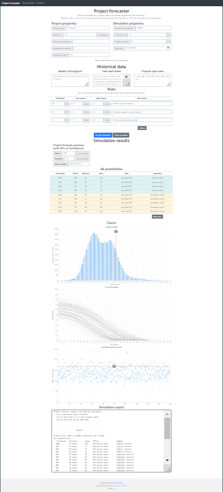
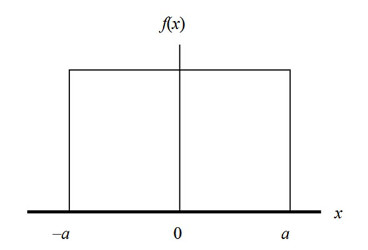
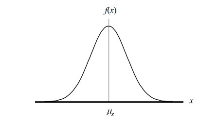
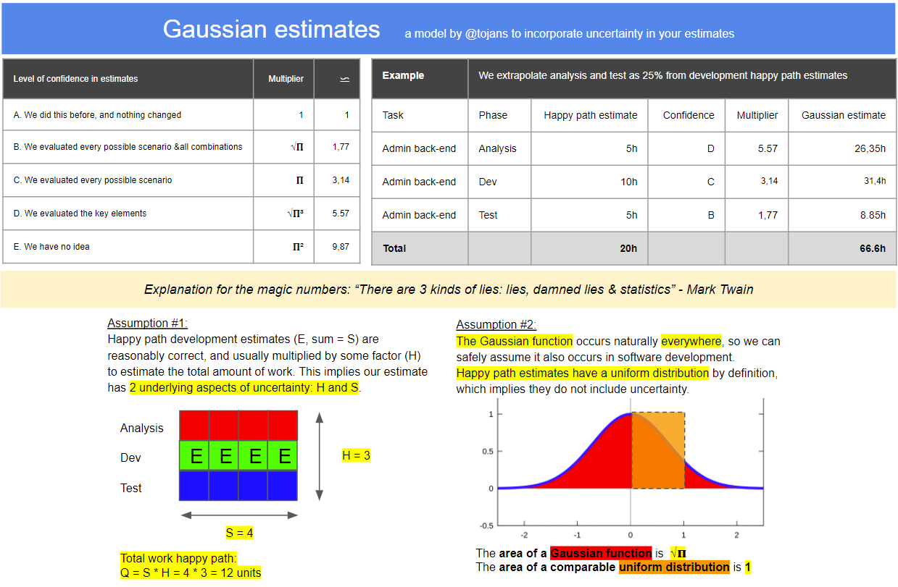

Software estimates done right
So, how do you estimate a software development effort?
Ha, that’s easy; there is a website called The Estimate Goat, that provides you random estimates every time you refresh the page!
Joking aside, let me rephrase the question: how do you reasonably estimate a software effort?
According to software developers, this is hard.
In fact, some people considered this so hard that they started the #NoEstimates movement in 2013, with the following motto:
Estimates are waste and we must eliminate estimates in software development.
It grew quite a following, so let’s start by begging the question:
Can we do without estimates?
Yes! No! Well, it depends…
Typically we commit to an engagement in the following ways:
- Time and material: provide labour and resources for n units of time - mostly freelancing or employment;
- Fixed price: provide certain deliverables according to predefined acceptance criteria. This can be time-boxed and/or scoped, for example “renovate my bathroom”;
- A hybrid, for example T&M development, but a fixed price analysis and support contract.
Based on the type of engagement, engaged stakeholders are exposed to diffent kinds of uncertainty:
- Cost - “How much will it cost? How much effort do we need to invest?";
- Time - “How long will it take?";
- Scope - “What is included, and what is not?”.
If all engaged stakeholders are willing to accept uncertainty, i.e. “I don’t care how much it costs or how long it takes, just get it done”, estimates are useless.
But even in this case, people ask how long it typically takes, which is interpreted as an estimate with high uncertainty… So they do end up with an implicit estimate…
#NoEstimates and the maturity of software development
Software development is a relatively young discipline; this implies some of our methodologies are very immature, and for some areas we do not even have a methodology.
If we want to increase the maturity of our profession, we need to use proven methodologies deeply rooted in scientific backgrounds, so we can do proper engineering as opposed to going with a hunch…
In my opinion, the #NoEstimates movement exposes a lack of proper methodologies regarding estimations.
The goal of this post is to present two complementary estimation approaches, backed by at least some scientific reasoning.
Disclaimer:
There is no silver bullet, but I hope that this approach at least inspires you to sit down and think about how you do estimates.
Estimating in a historical context: ‘‘Monte-Carlo forecasting’’
Let’s assume you have a team that has been developing software for a few weeks, months or even years. Given enough historical data, we can run a Monte-Carlo simulation to forecast effort and duration with probablity ranges.
I could go to great lenghts explaining why you could use this approach, but the wiki of this project motivates this approach rather well.
If you have your own data available, you can create your own forecast using this webpage
This tool was mentioned to me by Aram Koukia, and here is an excerpt about the data he uses for input:
I use 7 weeks of historical data from past projects and with considering some % tasks being added to scope from the initial set of tasks. I also assume most tasks finish between 1 - 5 days. I report with 80% confidence. My estimate-less forecasts has been pretty accurate
— Aram Koukia (@aramkoukia) January 20, 2021
Here is a screenshot of the example forecast included in the project:

Feel free to take a look at the source-code, if that is your kind of thing.
This approach has 2 main advantages:
- The outcome should be at least as good, if not better than the ‘‘Fingerspitzengefühl’' your team is using right now;
- You no longer have to bother your team asking for estimates.
So it’s a win-win for everyone!
2. Estimating for a future context: ‘‘Gaussian estimates’'
UPDATE
Apparently this was a completely wrong interpretation from my side; I mixed up several things, probably because I had a hammer and was looking for a nail, i.e. matching √ Π to something I envisioned, so I was starting from the solution and working my way back.
Here is an excerpt from a hacker news comment that did not sugarcoat it, but was very valuable to me:
Your blog post has so many errors that I don’t even know where to start. As another poster mentioned, areas under non-degenerate probability density functions are 1 by definition, whether they’re uniform, Gaussian, standardized or not. What you described as a “standard uniform distribution” is really degenerate distribution, meaning that you assume no uncertainty at all (stdev=0). There’s nothing “uniform” about that, you might just as well start with a Gaussian with stdev=0.
“converting from a standard uniform distribution to a Gaussian distribution” as you described does not make any sense at all. If you replace an initial assumption of a degenerate distribution with a Gaussian, as you seem to be doing, you replace a no-uncertainty (stdev=0) assumption with some uncertainty (so the uncertainty blow-up is infinite), but it doesn’t affect point estimates such as the mean or median, unless you make separate assumptions about that. There is nothing in your story that leads to multiplying some initial time estimate by sqrt(pi). The only tenuous connection with sqrt(pi) in the whole story is that the Gaussian integral happens to be sqrt(pi). There are some deep mathematical reasons for that, which has to do with polar coordinates transformations. But it has nothing to do with adjusting uncertainties or best estimates.
After this comment I decided to do some digging, so I reached out to someone who I consider an absolute math wizard: Steven De Keninck
without context I can only observe that its trivially equal to "Est = hpEst * PI^{dims/2}" - I would venture to say few mathematicians would stop before that simplification. Also PI as base for the exponential feels very arbitrary. I'll go with option 2.
— Steven De Keninck (@enkimute) March 4, 2021
… Which is a very polite answer that you can interpret as “your idea has nothing to do with math, you might as well go for numerology”.
Please consider this part as one of my not so sucessful thought experiments ;).
In some cases you need to provide an estimate in a context you do not know yet.
For a lot of those cases, I used to think about the happy path, and then applied a multiplier of 3. I had no idea why this worked, but it worked reasonably well…
Remark:
People described this approach before (multiply with √ Π, Π or Π²), but I never found any scientific reasoning behind it.
Because it had not been properly named, I baptized it ‘‘Gaussian estimates’’.
If this approach already has a well-defined name - which seems very likely, as my reasoning seems quite obvious after the fact - please let me know!
So let’s try to figure out why 3 (or Π) might be a good multiplier in some cases:
About uncertainty
In a future context you have the following knowns and unknowns:
- The known knowns: what you know you know;
- The known unknowns: what you know you don’t know;
- The unknown unknowns: what you don’t know you don’t know.
Some examples of known knowns:
- We will have to integrate with systems a, b & c;
- The functionality need to cover e, f & g;
- Our SLA will need to be h.
Some examples of known unknowns:
- How responsive is the customer;
- How well defined is the scope;
- Do we have any constraints we need to take into account.
Next to this, there will be unknown unknowns: aspects that we do not know we do not know, for example
- Person x might provide subpar cooperation;
- Person y might get ill and not be available for a while;
- There might be a history with technology z in the past, which results in a lack of trust.
We can factor in the known unknowns in the constraints and assumptions of our contract, but what about the unknown unknowns?
A little statistics primer
My approach to factoring in the unknown unknowns is rooted in statistics.
There are 3 kinds of lies: lies, damned lies & statistics - Mark Twain
First we will take a look at 2 different statistical distributions:
We have something called a Standard Uniform Distribution:

- mean = 1;
- median = 1;
- standard deviation = 0;
- area = 1.
Basically this just means that f(x) = 1.
We also have something called the Gaussian Distribution or normal distribution:

- mean = 1;
- median = 1;
- standard deviation = σ (sigma);
- area = √ Π.
The most important aspect to Gaussian distribution is the relationship with randomness; here is an excerpt from wikipedia:
Normal distributions are important in statistics and are often used in the natural and social sciences to represent real-valued random variables whose distributions are not known.Their importance is partly due to the central limit theorem. It states that, under some conditions, the average of many samples (observations) of a random variable with finite mean and variance is itself a random variable—whose distribution converges to a normal distribution as the number of samples increases. Therefore, physical quantities that are expected to be the sum of many independent processes, such as measurement errors, often have distributions that are nearly normal.
The ‘‘Gaussian multiplier’’
Imagine we are estimating a project where the requirements are very well defined and the team is operating smoothly; the only unknown you have is not knowing the integration API well.
We ask to estimate the happy path, broken down in fixed units of time (one day). This would imply your tasks would have a standard uniform distribution.
As everything else is routine, only the things concerning the integration API will have uncertainty included…
In reality, when executing these integration tasks, some will take a lot longer, and some will be shorter. Because we do not know what the actual distribution would be, we fall back to the distribution that occurs naturally in most of these cases: the Gaussian distribution. So converting from a standard uniform distribution to a Gaussian distribution should help.
To convert from one to the other, we divide by the area of the standard uniform distribution (1), and multiply with the area of the Gaussian distribution (√ Π). Note that all tasks still have a mean and median of 1, but we introduced the standard deviation.
Now, let’s assume you also need to interact with another organisation that has control over the API for every task, and that you will estimate this with an overhead multiplier of 30% if everything goes well (so estimates should be multiplied by 1.3). As you have not worked with the provider before, your estimate will probably not have a uniform distribution but a Gaussian distribution, so multiply with (√ Π) again.
So the actual estimate for our integration task would be:
happy path * 1.3 * (√ Π) * (√ Π)
= happy path * 1.3 * Π
A more pragmatic approach to the ‘‘Gaussian multiplier’’.
The above explanation contains the gist of the idea, but requires you to have a very good grasp of what an uncertainty dimension is:
- Time;
- Scope;
- Cost;
- … .
In order to make this a bit more digestable, I created a pragmatic heuristic that should be good enough for most cases. Without further ado, I present to you my suggested model:

This should provide you a pragmatic, but scientifically sound approach to doing estimates for future contexts.
I did not bother to go beyond Π², because the probability of your estimate would be too low beyond that point…
In closing
It has been over 5 years since my last blog post, but I sure enjoyed myself organizing my thoughts.
I hope this post is as valuable to you as it has been to me.
If you see any flaws, mistakes or even typos feel free to contact me…
All the best, and let’s hope it doesn’t take another 5 years to publish a blog post,
Tom